Introduction
Ancient Mega Dungeons gathers five essays about places that resemble the dungeons of role-playing games without having been built as games: the Egyptian labyrinth at Hawara, the Cretan labyrinth tradition and Knossos, Mesoamerican temple-pyramids and subterranean ritual spaces, Cappadocia's underground settlements, and the mausoleum of Qin Shi Huang.
Each essay moves between three layers: what ancient texts say, what archaeology can support, and what designers can learn from both. Evidence, later tradition, and speculation do not always point in the same direction. The source lists following each essay offer a starting point for checking the historical claims and reading further.
Why Lathmar Appears in These Essays
Lathmar: The Fallen Depths is a dark-fantasy role-playing game in development at Sabnock Works. It follows expeditions into a living underworld shaped by old civilizations, broken passages, resource pressure, bargains, and corruption. Its fictional setting includes the city of Lathmar, dwarven depths, Ithrax slavers, and the Skarn.
The passages that mention Lathmar are design applications. They show how historical architecture and myth can inspire fictional cultures, locations, and systems. They are not claims that Lathmar's peoples or events have historical counterparts, and the real cultures discussed here should not be reduced to game material.
The First Mega-Dungeon?
What the Ancient Egyptian Labyrinth of Hawara Can Teach Modern RPG Designers
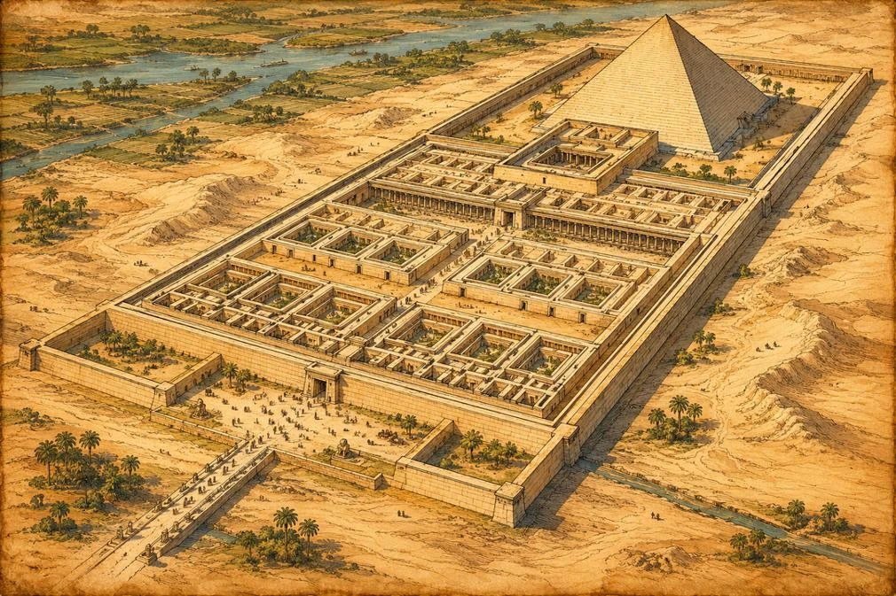
When most of us think about dungeon design, we usually look at games for inspiration. Wizardry, Bard's Tale, Dungeon Master, Eye of the Beholder, Dungeons & Dragons. We study maps, encounter design, progression systems, and puzzle layouts. But recently I stumbled across something that made me stop and think.
What if some of the oldest dungeon design ideas are not found in games at all?
While researching historical labyrinths, I came across an old reconstruction of the legendary Egyptian Labyrinth of Hawara. At first glance it looks almost like a dungeon map from an RPG sourcebook. There are distinct sections, a large central complex, themed areas, and a layout that seems designed to guide visitors through a series of increasingly important spaces.
The surprising part is that this structure may have been built nearly four thousand years ago.
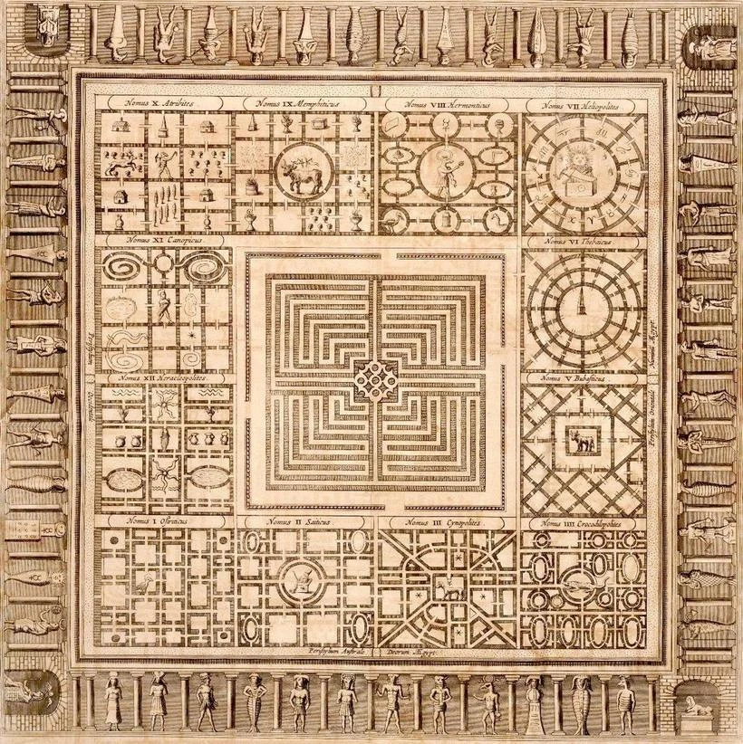
The Lost Wonder of Hawara
Today almost nothing remains of the original building. The Labyrinth of Hawara was constructed during the reign of Pharaoh Amenemhat III around 1800 BC, and over the centuries its stones were dismantled and reused elsewhere. What survives are archaeological traces and the accounts of ancient writers who saw it while parts of it still stood.
The most famous description comes from Herodotus, who visited Egypt around 450 BC. According to him, the labyrinth contained twelve great courtyards, thousands of chambers, and a bewildering network of corridors spread across multiple levels. He even claimed that it surpassed the pyramids in magnificence.
Ancient historians were not always known for understatement, and it is entirely possible that Herodotus exaggerated what he saw. Yet even other ancient writers described the complex as one of the greatest architectural wonders of Egypt. Whatever the exact numbers may have been, everyone agreed on one thing: this place was enormous.
Unfortunately, that mystery is part of what makes Hawara so fascinating today. Archaeologists have uncovered foundations and fragments of the site, but nobody can say with certainty what the complete structure looked like. In a strange way, its disappearance has become part of its legend.
Why Build Something So Complicated?
What fascinates me is not the size of the labyrinth but its purpose.
Unlike the dungeons we explore in RPGs, Hawara was never built to contain monsters, treasure chests, or wandering adventurers. It appears to have served as an administrative center, a religious complex, a ceremonial site, and possibly part of a funerary monument connected to the nearby pyramid of Amenemhat III.
In many ways it functioned like a city enclosed within a single building.
Priests, officials, guards, workers, and visitors all moved through different areas that served different functions. Access was controlled. Certain rooms were public, others restricted. Some spaces were intended for administration, others for worship.
When you think about it, that is surprisingly close to how many memorable RPG locations are designed.
The best dungeons rarely feel like random collections of rooms. They feel like places that once had a purpose. Someone built them. Someone lived there. Someone used those halls long before the player arrived.
That idea is much older than fantasy gaming.
The Dungeon Before Dungeons
One of the biggest misconceptions in fantasy design is that dungeons exist solely to provide combat encounters.
Historically, large enclosed complexes were built because they solved practical problems. They protected valuable objects, controlled movement, reinforced social hierarchy, and created separation between ordinary people and sacred or politically important spaces.
The deeper someone travelled into such a complex, the more restricted access became.
That pattern appears again and again in modern RPGs. The outer halls are relatively safe. The inner chambers belong to priests, nobles, cultists, or powerful creatures. The final destination is reserved for the most important figure in the entire structure.
Whether that figure is a king, a lich, a dragon, or a mad wizard depends on the setting.
The principle itself has remained remarkably consistent for thousands of years.
Architecture tells a story before a single word of dialogue is spoken.
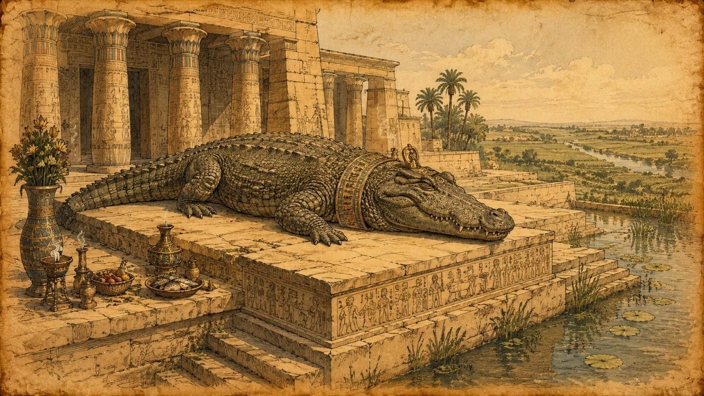
Lessons for Dungeon Designers
The more I studied the reconstructions of Hawara, the more I found myself thinking about dungeon design in Lathmar and other classic RPGs.
One lesson is the importance of distinct regions. Many reconstructions divide the labyrinth into separate sections, each with its own symbolic purpose. Modern players respond to exactly the same idea. They remember the Spider Caves, the Ancient Crypts, or the Hall of Kings. They rarely remember corridor number thirty-seven.
Another lesson is the value of a central hub. Several reconstructions place a massive central structure at the heart of the labyrinth, with surrounding sections branching outward. Modern dungeon crawlers use this approach constantly because it encourages exploration while helping players maintain a sense of orientation. Players can venture into one section, return to a familiar location, and then choose a different route.
Perhaps the most interesting lesson is the power of mystery.
Nobody knows exactly what Hawara looked like. That uncertainty has allowed generations of historians, artists, and dreamers to imagine their own versions of the labyrinth. In game design we often feel pressure to explain everything, but some of the most memorable locations are memorable precisely because they leave questions unanswered.
Who built this place?
Why was it abandoned?
What happened here?
Sometimes mystery creates stronger memories than explanation.
The Building Is The Adventure
Many RPG dungeons are designed as obstacle courses. Players move from encounter to encounter, collect rewards, and eventually defeat a boss waiting at the end.
The descriptions of Hawara suggest something very different.
Visitors were meant to be impressed by the structure itself. The scale, complexity, and symbolism of the building were part of the experience. Long before anyone talked about environmental storytelling, architects were already using physical space to create emotion.
People entered these places and felt small.
That is a powerful design lesson.
Sometimes the dungeon itself should be the most memorable character in the adventure.
When players think back on their favorite RPG experiences years later, they often remember places before they remember statistics. They remember the city beneath the mountain, the endless catacombs, the forgotten temple, or the haunted fortress.
Four Thousand Years Later
What I find most remarkable about Hawara is that it was never intended as entertainment. It was built to demonstrate power, inspire awe, and create a sense of mystery. Yet thousands of years later it still captures our imagination in much the same way a great dungeon does.
As dungeon designers, game masters, and RPG fans, we often search for inspiration in other games. Sometimes it is worth looking much further back.
Long before the first tabletop campaign, before the first dungeon crawler, and before anyone rolled a twenty-sided die, people were already creating spaces that inspired curiosity, exploration, and wonder.
The technology has changed.
The goals have not.
Next time we'll leave Egypt behind and travel to Crete, where another famous labyrinth awaits us. Unlike Hawara, that one supposedly had a monster waiting at its center.
And every dungeon crawler knows exactly how that story begins.
Sources and Further Reading
The historical discussion above is grounded in the sources below. The comparisons to game design and the fictional world of Lathmar are interpretive.
Herodotus. The Histories, 2.148. Translated by A. D. Godley. Harvard University Press, 1920. Digital text
Petrie, W. M. Flinders. Hawara, Biahmu, and Arsinoe. Field & Tuer, 1889. Digitized edition
Uphill, Eric P. Pharaoh's Gateway to Eternity: The Hawara Labyrinth of King Amenemhat III. Routledge, 2000. Publisher record
University College London. Digital Egypt for Universities: Hawara. Site overview
The Original Dungeon Boss?
What the Labyrinth of the Minotaur Can Teach Modern RPG Designers
Last time we looked at the Egyptian Labyrinth of Hawara, a real structure that may have inspired some of the earliest ideas behind large-scale dungeon design. This time we're moving from history into mythology and visiting what is perhaps the most famous labyrinth ever imagined.
Unlike Hawara, this one comes with a boss monster.
Even people who have never rolled a twenty-sided die usually know the basic story. Somewhere beneath the island of Crete lies a vast labyrinth. Deep within its twisting corridors lives the Minotaur, a creature with the body of a man and the head of a bull. Young men and women are sent into the maze as sacrifices, and none ever return.
Until a hero decides to enter.
The more I think about it, the more surprising it becomes that this myth is over two thousand years old. Strip away the gods and legends, and what remains feels remarkably familiar to anyone who enjoys dungeon crawlers or tabletop RPGs. There is a dangerous maze, a powerful monster, a quest item, and a final confrontation waiting at the center. That sounds less like ancient mythology and more like the setup for a classic adventure module.
The First Dungeon Crawl?
The story begins with King Minos of Crete, who commissions the legendary inventor Daedalus to construct an impossible maze. Ancient writers describe it as so confusing that nobody who entered could find their way back out. At the center of the labyrinth dwelled the Minotaur.
As punishment and tribute, Athens was required to send groups of young men and women to Crete. Once inside the labyrinth, they became prey for the monster lurking within. Eventually, the Athenian prince Theseus volunteered to join the sacrifice. His goal was not merely to survive. His goal was to kill the Minotaur and end the cycle.
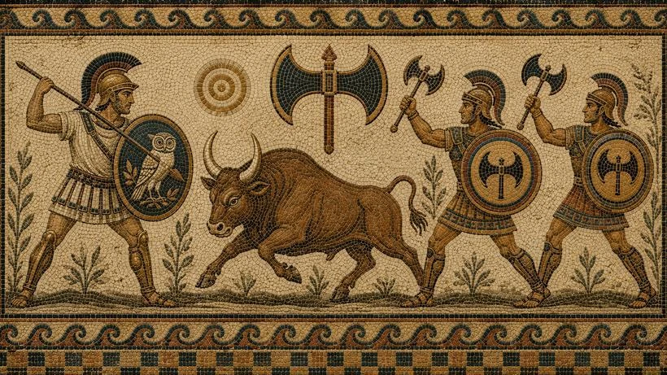
For modern RPG players, this setup feels instantly recognizable. A dangerous location, a clearly defined objective, and a powerful enemy waiting at the end. Many adventures still follow exactly the same structure today. What makes the myth particularly interesting, however, is that the Minotaur is not the only challenge. The labyrinth itself is every bit as dangerous as the creature living inside it.
Ariadne's Thread: The First Automap?
One detail of the myth has always fascinated me, and the older I get as a gamer, the more interesting it becomes.
Before entering the labyrinth, Theseus receives a ball of thread from Ariadne, the daughter of King Minos. As he ventures deeper into the maze, he unwinds the thread behind him. After slaying the Minotaur, he follows the thread back to the entrance and escapes.
When I first heard the story as a child, the thread seemed like a minor detail. Today, as someone who spends far too much time thinking about dungeon design, it feels like the most important part of the entire myth. Without the thread, Theseus might still be capable of defeating the Minotaur. The problem is getting back out afterwards.
In other words, Ariadne's thread is not a weapon. It is a navigation tool.
For players of classic dungeon crawlers, that idea should sound very familiar. Long before modern RPGs offered minimaps, quest markers, and fully revealed automaps, players were expected to find their own way through dungeons. If you played Wizardry, Bard's Tale, Dungeon Master, or many other dungeon crawlers of the 1980s and early 1990s, chances are you spent almost as much time drawing maps as fighting monsters.
Graph paper was often considered essential equipment. Every corridor, every door, every turn had to be recorded by hand. A single mistake could throw off an entire level and leave you hopelessly lost hours later. Many players developed their own symbols and notation systems, and some kept entire folders filled with maps of their favorite games.
Looking back, those maps served exactly the same purpose as Ariadne's thread. They provided a path home. The deeper you explored, the more important that path became. Running out of spells or healing potions was one problem. Not knowing how to reach the exit was often a much bigger one.
When automapping became common during the 1990s, much of that burden disappeared. Exploration became more convenient and less frustrating, but something was lost as well. Modern players rarely experience the feeling of standing deep inside an unfamiliar dungeon and wondering whether they can actually find their way back to safety.
The myth of the Minotaur is built entirely around that fear. Theseus enters a place where orientation breaks down. Every corridor looks similar. Every intersection presents another decision. The labyrinth is dangerous not simply because it contains a monster, but because navigation itself becomes part of the challenge.
The Minotaur may be the boss of the story, but the labyrinth is the true antagonist. Ariadne's thread is perhaps the oldest dungeon mapping tool ever recorded.
The Monster And The Dungeon Belong Together
Another lesson hidden inside the myth is the relationship between the Minotaur and its home.
The creature itself is certainly memorable, but much of that memorability comes from where it lives. A Minotaur standing in an open field would probably not have become one of mythology's most enduring monsters. The labyrinth gives the creature context, mystery, and identity.
Many classic RPGs use exactly the same principle. Players rarely remember a monster in isolation. They remember the place where they encountered it. The dragon beneath the mountain, the vampire inside the castle, or the lich hidden within an ancient tomb remain memorable because the environment becomes part of the monster's identity.
Looking at the myth from this perspective, the Minotaur is not simply a boss encounter waiting at the end of a dungeon. The entire labyrinth acts as an extension of the creature itself. Every wrong turn increases tension. Every dead end reminds visitors that they are trapped in a place designed to confuse them. Good dungeon design often works exactly the same way. The location should strengthen the story of the creature that inhabits it.
How The Story Ends
The confrontation itself is surprisingly straightforward.
Deep within the labyrinth, Theseus eventually encounters the Minotaur. Ancient sources differ on the details, but all versions agree on the outcome. The monster is slain, ending the terrible tribute that Athens had paid to Crete for years. With the help of Ariadne's thread, Theseus finds his way back through the maze and escapes together with the surviving Athenian youths.
At first glance, this seems like the perfect ending to a heroic adventure. The hero defeats the monster, rescues the victims, and sails home in triumph. Greek mythology, however, rarely allows stories to end so neatly.
Ariadne leaves Crete with Theseus and expects to become his wife. Instead, she is abandoned on the island of Naxos. Ancient authors offer different explanations. In some versions Theseus simply deserts her. In others, the gods intervene and command him to leave her behind. Later traditions claim that Dionysus, the god of wine and revelry, takes Ariadne as his divine bride.
Things do not go much better for Theseus himself. Before leaving Crete, he promises his father, King Aegeus, that he will replace his ship's black sails with white ones if he survives. Returning home after his victory, he forgets to change the sails. Seeing the black sails approaching Athens, Aegeus believes his son has died and throws himself into the sea.
According to legend, the Aegean Sea receives its name from this tragedy.
For a story that is often summarized as "the hero kills the monster," the ending is remarkably bittersweet. Victory comes at a cost, and not everyone receives the happy ending one might expect. In that respect, it feels closer to many modern fantasy stories than to a traditional fairy tale.
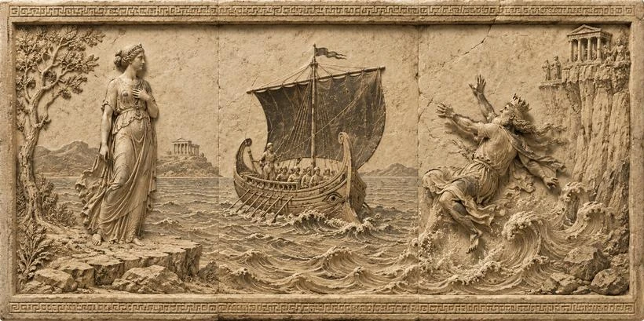
Did The Labyrinth Ever Exist?
For dungeon enthusiasts, this may be the most interesting question of all.
Was there ever a real labyrinth beneath Crete?
The answer depends on what exactly we mean by "labyrinth." There is no archaeological evidence for a vast underground maze filled with dead ends and a monster waiting at its center. No trace of such a structure has ever been discovered.
What archaeologists have found, however, is something equally fascinating: the Palace of Knossos.
Excavated by Sir Arthur Evans beginning in 1900, Knossos was the political and ceremonial center of the Minoan civilization. Even today, the ruins cover a massive area filled with hundreds of rooms, staircases, corridors, storage chambers, workshops, courtyards, and ceremonial spaces. Visitors often describe the layout as confusing even with a modern map in hand.
Looking at the reconstructed floor plans, it becomes easy to understand how stories about an impossible maze might have emerged. To outsiders arriving centuries later, the sprawling palace could easily have inspired tales of a labyrinth from which nobody could escape.
There is another intriguing connection. The word "labyrinth" may derive from labrys, the double-headed ceremonial axe that appears frequently in Minoan religious imagery. Some scholars have suggested that the original meaning of labyrinth may have been something closer to "The House of the Double Axe" rather than a maze in the modern sense.
Whether that theory is correct remains debated, but it highlights an important point. The myth probably did not emerge from nowhere. Like many legends, it was likely built upon fragments of real places, real cultures, and real memories that became transformed through centuries of storytelling.
The Minotaur itself is almost certainly mythical.
The Palace of Knossos is very real.
And somewhere between the two lies the origin of one of the most influential dungeon stories ever told.
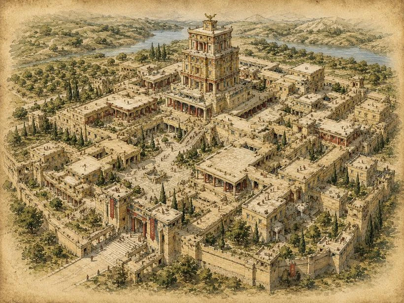
A Story That Never Really Ended
Perhaps that is why the tale of Theseus and the Minotaur still feels relevant to RPG players today.
At its heart, it contains many of the same ingredients that make dungeon crawlers compelling. A dangerous place, an uncertain journey, a memorable monster, and a clever solution that requires more than brute force. Long before anyone created a character sheet, drew a dungeon map, or implemented an automap system, people were already telling stories about heroes entering labyrinths and trying to find their way home.
The Minotaur may never have existed. The labyrinth may never have existed in the form described by the myths. Yet both continue to influence fantasy worlds, dungeon crawlers, tabletop campaigns, novels, and video games more than two thousand years later.
Few monsters can claim such a legacy.
And if you've ever spent an evening drawing maps on graph paper while hoping not to get hopelessly lost, you probably have more in common with Theseus than you think.
Sources and Further Reading
The historical discussion above is grounded in the sources below. The comparisons to game design and the fictional world of Lathmar are interpretive.
Apollodorus. The Library and Epitome, Epitome 1.9. Translated by J. G. Frazer. Harvard University Press, 1921. Digital text
Plutarch. Life of Theseus, especially sections 15-20. In Parallel Lives. Digital text
Shapland, Andrew, ed. Labyrinth: Knossos, Myth & Reality. Ashmolean Museum, 2023. Museum publication
Whitley, James. Knossos: Myth, History and Archaeology. Bloomsbury Academic, 2023. Publisher record
British Museum. Greece: Minoans and Mycenaeans. Collection overview
The Dungeon Beneath The Sacred Mountain
What Mesoamerican Pyramids Can Teach RPG Designers
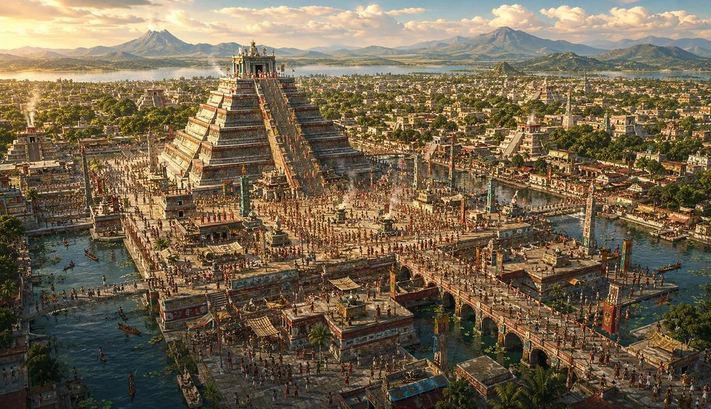
After Hawara and the Minotaur's Labyrinth, it is tempting to think we have already covered the most obvious historical ancestors of dungeon design. We had the lost mega-structure, the mythological monster maze, and the underground refuge where people actually lived.
But the Americas offer something different.
Mesoamerican pyramids are often compared to the pyramids of Egypt, mostly because both are large, ancient, triangular structures that dominate the landscape. That comparison is understandable, but it can also be misleading. Egyptian pyramids were often monuments for the dead, especially royal tombs and symbols of transformation after death. Many Mesoamerican pyramids were something else entirely. They were temple platforms, sacred mountains, ritual stages, and visible centers of living cities.
That difference matters for game design.
In Egypt, the pyramid often hides the dead king inside a massive body of stone. The interior is usually narrow, controlled, and surprisingly limited compared to the size of the monument. In Mesoamerica, the pyramid often raises living ritual above the city while caves, tunnels, buried chambers, and nearby openings in the earth connect the sacred structure to the world below.
For dungeon designers, that is a completely different kind of inspiration.
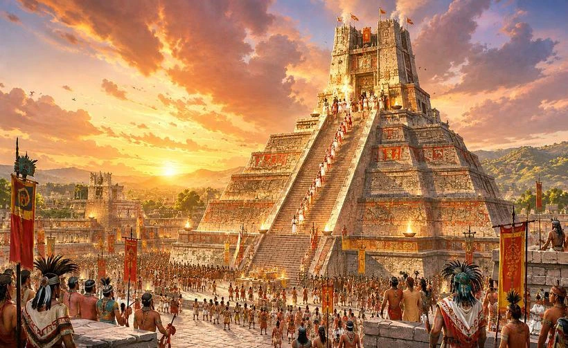
Not A Tomb, But A Sacred Mountain
When most modern players hear the word “pyramid,” they may imagine sealed tombs, narrow passages, dead rulers, and traps. That is the Egyptian model, or at least the popular version of it. The Great Pyramid of Giza is enormous, but its interior is not a sprawling maze. It contains corridors, chambers, shafts, and the Grand Gallery, but very little open space compared to the mass of the structure.
That does not make it less fascinating. It simply makes it a different kind of monument.
Mesoamerican pyramids often worked differently. Many were designed as platforms for temples. Their most important spaces were not always hidden deep inside but placed visibly on top, above plazas where people gathered and watched ritual life unfold. The pyramid was not merely a container. It was part of the performance.
This does not mean that death was absent. Palenque’s Temple of the Inscriptions, for example, famously contains the tomb of the Maya ruler K’inich Janaab’ Pakal. That is an important reminder that the Americas were not one culture with one architectural rule. Still, the general contrast remains useful: many Mesoamerican pyramids were living ritual architecture, not simply sealed graves.
That opens up a powerful design idea.
The dungeon does not have to begin with a locked tomb. It can begin with a living temple, a city watching from below, and a priesthood that knows far more about the foundations than it admits.
Under, Inside, Or Around The Pyramid?
One problem with documentaries and internet articles is that they often compress several different things into one dramatic phrase: “underground tunnels beneath the pyramid.”
Sometimes that is true. Sometimes it is only partly true. Sometimes the tunnel is ancient, and sometimes it was created by modern archaeologists trying to understand the monument. For game design, the distinction is useful because each version produces a different kind of scenario.
At Teotihuacan, there are real ancient subterranean features. Beneath the Pyramid of the Sun, excavations revealed a tunnel-like cave ending in a cloverleaf-shaped set of chambers. This has been interpreted in connection with emergence myths, water and fire rituals, caves, and the Mesoamerican underworld. The pyramid may have been built in relation to that sacred cave, not simply placed there by accident.
Under the Temple of the Feathered Serpent, also at Teotihuacan, archaeologists found a deliberately sealed tunnel leading toward chambers beneath the pyramid. This is one of the strongest examples for our topic because the tunnel is not just a technical corridor. It appears to have been ritually important, filled with offerings, symbolic objects, and a carefully staged relationship between the built world and the world below.
Then there is Cholula, where things become more complicated. The Great Pyramid of Cholula is famous for its huge mass and for the kilometers of tunnels associated with it. Those tunnels are real, but most of them are not an ancient underground city hidden inside the pyramid. They were created in the twentieth century by archaeologists to explore the enormous structure and its construction phases. They are still fascinating because they allow modern visitors to walk through the body of the pyramid, almost like moving through a sectioned temple-mountain. Historically, however, they should not be confused with an ancient dungeon system.
So the answer is: under, inside, and around, depending on the site.
Sometimes the sacred space is a cave beneath the pyramid. Sometimes it is a chamber within the structure. Sometimes it is a later excavation tunnel. Sometimes the truly important underworld is not inside the pyramid at all but in nearby caves, cenotes, springs, and natural openings in the earth.
For RPGs, that variety is extremely useful. A temple complex does not have to be one map. It can be a surface city, a ceremonial pyramid, buried older construction phases, water caves, sealed tunnels, and a symbolic underworld all connected by ritual logic.
Teotihuacan: The Underworld As Design
Teotihuacan is probably the strongest example if we want to talk about the pyramid as a cosmological dungeon.
The city itself was built on a monumental scale. Its great pyramids were not isolated objects but part of an urban and ceremonial landscape. The Pyramid of the Sun, the Pyramid of the Moon, and the Temple of the Feathered Serpent all belonged to a larger sacred geography of roads, plazas, alignments, mountains, caves, and political power.
From a dungeon design perspective, the tunnel under the Temple of the Feathered Serpent is almost too good to ignore. A sealed passage beneath a temple. A long corridor. Chambers at the end. Ritual deposits. Strange reflective materials. Offerings. Symbolic landscapes. A route downward into something that was not meant to be ordinary space.
That is not a treasure corridor.
It is a controlled descent into the underworld.
The important point is that the people who created these places did not separate architecture from cosmology in the way modern people often do. A pyramid could be a mountain. A cave could be a place of origin. Water below the earth could belong to the realm of gods, ancestors, or dangerous powers. Movement through architecture could therefore become movement through a symbolic universe.
That is excellent dungeon design.
The player is not just walking through rooms. The player is descending through meaning.
Where The Gods Reside
It would be too simple to say that the gods literally lived inside the pyramid like a monster in a lair. That is a modern fantasy image, and we should be careful with it.
But it is fair to say that these places were built to hold divine presence.
A temple at the top of a pyramid was not just decoration. It marked a point of contact between human beings and supernatural powers. The pyramid could become an artificial mountain, and mountains in many cultures are places where the sky, earth, and underworld meet. The staircase becomes more than an architectural feature. It becomes a route between levels of reality.
This is where the idea becomes especially useful for fantasy settings.
Imagine a temple where the upper shrine is still active. Priests climb the steps at dawn. Smoke rises from braziers. Pilgrims gather below. The ruler claims legitimacy from the god whose image resides above. Beneath the same structure, an older tunnel leads downward into a sealed cavern where the first version of the god was worshipped in a much darker form.
The public religion is on top.
The older truth is below.
That is not only historically inspired. It is strong game structure.
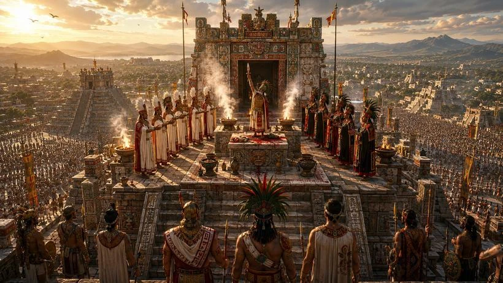
Three Ways To Play It
For TTRPGs and computer RPGs, this kind of site raises a question more strongly than the previous examples.
When does the adventure take place?
If the game is set during the height of the temple city, the pyramid is not a ruin. It is alive. Priests, guards, nobles, merchants, captives, pilgrims, and foreign envoys all move through the visible levels of society. The adventure might involve political intrigue, ritual obligations, forbidden access, stolen offerings, or a priesthood divided over what lies beneath the temple. In this version, the dungeon is not abandoned. It is restricted.
If the game is set in a fantasy world long after the fall of the temple, the same site becomes a ruined sacred mountain. The plazas are cracked. The upper shrine is open to the sky. Vegetation grows over the steps. The old tunnel has collapsed, but not completely. Doors that once separated ritual zones now behave strangely. Some open into older construction layers. Others open into places that were never physically inside the pyramid at all.
That is where the idea of corruption becomes very strong.
Something below has awakened. Demons, spirits, or otherworldly forces rise through the same routes that once connected the temple to the underworld. The old ritual architecture still works, but no longer in the way its builders intended.
If the game is set in the modern age, the site becomes a perfect archaeological horror scenario. A research team opens a tunnel that was sealed for centuries. At first they find pottery, offerings, pigments, bones, and ritual objects. Then the geometry stops making sense. Measurements no longer match the surface plan. One sealed doorway appears on different scans in different places. A passage that should end beneath the pyramid leads somewhere else.
That is where the Cthulhu-like version begins.
The horror does not need to start with a monster attack. It can begin with the discovery that the ancient builders were not symbolic at all. The underworld they mapped was real.
Lathmar: When Disaster Becomes A Road
This is where the idea connects very naturally to Lathmar: The Fallen Depths.
In the Lathmar universe, the southern realms already mirror some of this logic. The Ithrax do not embody evil hidden in darkness like the pale Deep-Elves. They represent something more unsettling: domination beneath the open sky. Their cities, pyramids, monuments, and geometric structures rise from jungles and swamps, shaped by the labor of the Skarn.
That makes them very different from the usual underground monster culture.
The Ithrax are not simply cave dwellers. They build civilizations of control. Their temples and cities are not chaotic ruins. They are expressions of hierarchy without visible kings, power without open violence, and slavery disguised as order. The Skarn raise the stones. The Ithrax shape the minds. The jungle itself seems to obey.
A Mesoamerican-inspired temple world fits them almost too well, not as a direct copy of history, but as a fantasy echo of the same design logic: sacred architecture, public ritual, hidden foundations, and power reaching downward into places ordinary people should never enter.
But the corruption in Lathmar adds a different twist.
The doors do not fail everywhere. They fail in Lathmar.
The city has sealed itself beneath an energy dome, trying to keep the spreading corruption contained. Inside that trapped world, space itself has begun to break. Doors no longer lead where they should. Passages twist. A familiar threshold may suddenly open into another part of the dungeon, another forgotten structure, or somewhere far beyond the city.
For most people in Lathmar, this is a disaster.
For the Ithrax trapped in the old slave mines beneath the city, it is an opportunity.
Their agents and slave drivers no longer need to rely only on long, dangerous caravans through the wilderness. They wait. They observe the rhythm of the corrupted doors. They learn which passages open, where they lead, and how long they remain stable. What began as a curse for the city becomes a shortcut for them.
A door in the slave pits beneath Lathmar may open into the southern jungle.
Another may lead near an Ithrax pyramid.
Another into a hidden temple route known only to their kind.
Another into a swamp settlement where Skarn laborers still raise stone under watchful reptilian eyes.
This changes the entire meaning of the slave trade beneath Lathmar. It is no longer only an underground criminal network. It becomes a transregional system built on broken space. Captives can vanish through doors that should not exist. Goods, guards, and overseers can move without weeks of travel. The Ithrax do not need to conquer Lathmar openly. They only need to wait for the next opening.
The misfortune of one civilization becomes the fortune of another.
That is a much stronger use of corrupted gates than random teleportation. The doors are not arbitrary. They have become part of the economy of domination. For the victims, a wrong turn may mean disappearance. For the Ithrax, it means supply lines.
This also gives the Ithrax and Skarn articles a stronger architectural background. The Ithrax are not merely slavers operating in tunnels beneath the city. They belong to a larger southern world of temple pyramids, swamp monuments, mental domination, and slave-built sacred architecture. The Skarn are not only strong servants. They are the hands that raised those structures and the bodies that still guard them, even when they no longer understand the full purpose of what they built.
In Lathmar, corruption does not create the Ithrax system from nothing.
It gives that system a door.
The Living Pyramid
This is what makes the pyramids of the Americas so different from the simple “ancient tomb full of traps” image.
They were not only about hiding the dead. Many were about making the sacred visible. They stood in the center of cities, above plazas, aligned with mountains, rituals, calendars, and political authority. At the same time, caves and tunnels beneath them could point downward into origin myths, underworld symbolism, and forces that were not meant to be approached casually.
That is a strong foundation for RPGs.
A party can climb the steps during a festival while the city watches. They can return centuries later and descend into the broken shell of the same temple. Or they can arrive as modern researchers, convinced they are opening a sealed archaeological passage, only to discover that the ancient builders were not metaphorical when they spoke of the world below.
For Lathmar, the lesson is clear. The strongest dungeons are not just complicated spaces. They are places with purpose. A sacred mountain is not interesting because it has corridors. It is interesting because every corridor belongs to a larger idea: power above, truth below, and a threshold between worlds.
The doors in Lathmar were never meant to become roads.
The tunnels beneath the temples were once ritual paths.
The chambers below the pyramids were once places of offering.
Now the city is wounded, and the Ithrax have learned how to profit from the wound.
And when a sacred mountain opens, something always comes through.
Sources and Further Reading
The historical discussion above is grounded in the sources below. The comparisons to game design and the fictional world of Lathmar are interpretive.
Instituto Nacional de Antropologia e Historia. The Underworld Beneath the City of the Gods. Official overview
Gomez Chavez, Sergio, and Julie Gazzola. El uso del escaner laser 3D para la exploracion del tunel bajo el Templo de la Serpiente Emplumada en Teotihuacan. 2018. Journal article
Cowgill, George L. Ancient Teotihuacan: Early Urbanism in Central Mexico. Cambridge University Press, 2015. Publisher record
Instituto Nacional de Antropologia e Historia. Great Pyramid of Cholula. Official site record
UNESCO World Heritage Centre. Pre-Hispanic City and National Park of Palenque. World Heritage record
The Dungeon Where People Actually Lived
What the Underground Cities of Cappadocia Can Teach RPG Designers
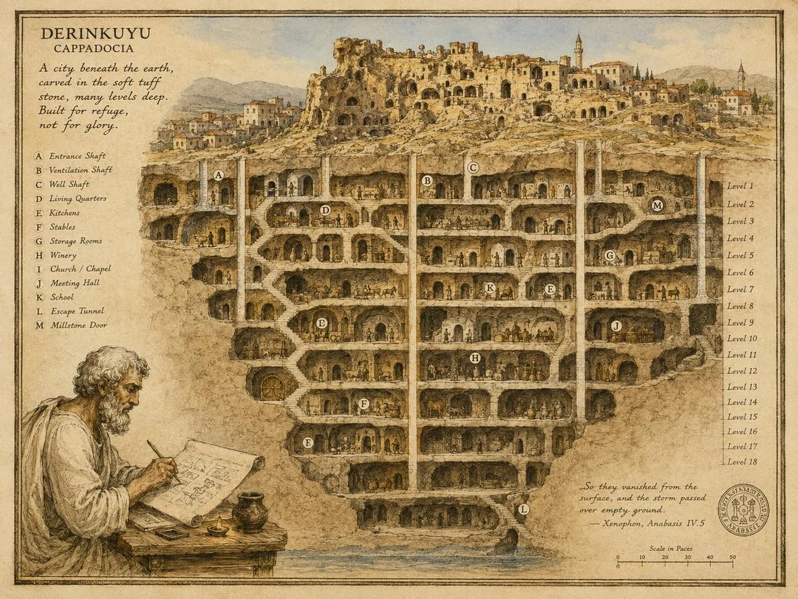
After looking at Hawara and the Labyrinth of the Minotaur, it is tempting to think of ancient dungeons as either lost wonders or mythological stories. Hawara was real, but mostly vanished. The Minotaur’s labyrinth may have grown out of memory, architecture, and myth. Both are fascinating, but both leave us with a problem: we have to imagine much of what they were like.
Cappadocia is different.
In central Anatolia, beneath the strange volcanic landscape of modern Turkey, there are underground cities that people can still enter today. Not just a tomb. Not just a cellar. Not just a hidden chamber beneath a castle. Entire networks of rooms, tunnels, storage areas, churches, wells, ventilation shafts, defensive doors, and living spaces were carved into the rock.
The most famous of these is Derinkuyu.
And if you are a dungeon crawler fan, this is where things get almost absurd. Because Derinkuyu is not merely a place that looks like it could inspire a dungeon. It practically is one.
The difference is that people actually lived there.
A City Beneath The Earth
Derinkuyu lies in Cappadocia, a region shaped by ancient volcanic activity. Over time, ash and lava deposits became soft tuff, a type of rock that is easy enough to carve but stable enough to hold complex structures. That geological accident created one of the strangest inhabited landscapes in the world. People carved homes, churches, monasteries, storage rooms, and entire settlements into the rock.
Above ground, Cappadocia is famous for its fairy chimneys and cave churches. Below ground, it becomes something else entirely.
Derinkuyu descends deep beneath the town that now sits above it. Official descriptions give a depth of about 85 meters, with several levels arranged below one another. Depending on the source, you will see different numbers for how many levels the full complex may contain, but only a fraction of the city is open to visitors today. That detail alone already feels like classic dungeon design: the part you can explore is impressive, but the imagination immediately goes to the sealed doors and unvisited passages beyond.
The city contains spaces that sound almost unreal when listed together. Stables, cellars, kitchens, food stores, churches, wells, ventilation shafts, meeting rooms, and even a missionary school. This was not a hole in the ground where frightened people waited for a few hours. It was a designed refuge, built so a large community could survive underground for a meaningful period of time.
That changes how we should think about it.
Derinkuyu was not a dungeon in the fantasy sense. It was not created to challenge heroes. It was created to keep ordinary people alive.
Not One Dungeon, But A Whole Region
One of the first surprises is that Derinkuyu was not unique.
Cappadocia contains multiple underground settlements, with Kaymakli being the other famous example. There are also other underground complexes across the region, some smaller, some only partly explored, and some known more through local memory than through full excavation. The exact number depends on how one defines an underground city, but the important point is simple: this was not an isolated curiosity.
It was a regional strategy.
That is what makes Cappadocia so interesting from a worldbuilding perspective. In many fantasy settings, an underground city exists because one ancient civilization built one strange place. In Cappadocia, the landscape itself encouraged subterranean life. The geology made it possible, the political situation made it useful, and repeated periods of danger made it necessary.
This is a useful lesson for RPG designers. A dungeon becomes more believable when it belongs to a larger environment. Derinkuyu makes sense because Cappadocia makes sense. The underground spaces are not random. They are part of the same cultural and geological logic that produced the rock cut churches, cave villages, and monastic cells above ground.
In other words, the dungeon is not just a location.
It is an ecosystem.
Why Go Underground?
The answer is not treasure.
The answer is survival.
Cappadocia sat in a region that was crossed, contested, and ruled by many powers over the centuries. During the Byzantine period, Christian communities used rock cut settlements and subterranean towns as places of refuge, especially during periods of war and raids. Going underground allowed people to disappear from the visible landscape, seal entrances behind them, protect their water supply, and survive until danger passed.
That is very different from the way many fantasy dungeons are designed.
In a normal RPG dungeon, the party goes underground because something valuable or dangerous is waiting below. In Derinkuyu, people went underground because the danger was above them. The underground city was not the threat. It was the shield.
That inversion is powerful.
Imagine a campaign where the dungeon is not hostile by default. It begins as a refuge. Families are hiding there. Supplies are limited. Every closed stone door protects one section but isolates another. Every ventilation shaft is both a lifeline and a potential weakness. Every well must be guarded, not because it contains a magic item, but because poisoned water could doom everyone below.
That is a much more human kind of tension than simply placing a monster in every room.
Designed For Defense
Derinkuyu also shows how practical defensive architecture can be more interesting than fantasy traps.
The passages are narrow. Some rooms are connected by tunnels that force people to move in single file. Entrances could be difficult to detect. Large circular stone doors could seal off corridors from the inside. Some wells were deliberately arranged so that an attacker from above could not easily poison the entire water system. Ventilation shafts kept air moving through the underground levels.
None of this feels like decoration.
It feels like a system.
For dungeon design, that matters. A good dungeon should not feel like a collection of rooms waiting to be cleared. It should feel like a place where architecture creates consequences. Narrow corridors change combat. Sealed doors change movement. Water and air become strategic resources. Shortcuts matter. Bottlenecks matter. Safe rooms matter.
Derinkuyu reminds us that a dungeon does not need spike pits and magic runes to be dangerous. Sometimes a single blocked corridor is enough.
If you are hiding underground with hundreds or thousands of people, the real enemy is not a goblin patrol. It is panic, thirst, smoke, disease, betrayal, and time.
The Dungeon As A Living Machine
The more I read about Derinkuyu, the less it felt like a maze and the more it felt like a machine.
Everything had a function. Stables near upper levels make sense because animals are difficult to move deep underground. Storage rooms are essential because no refuge works without food. Churches and religious rooms make sense because people do not stop being people just because they are hiding. Ventilation shafts are not background details. They are the reason the city can exist at all.
This is one of the clearest lessons for RPG and TTRPG design.
Function creates atmosphere.
A room labeled “storage chamber” is boring. A room filled with sealed grain jars, broken amphorae, rat holes, and scratch marks near the door is already a story. A ventilation shaft is not just a hole in the ceiling. It can carry whispers, smoke, poison gas, distant footsteps, or the sound of someone moving on another level. A well is not just scenery. It is the difference between surviving and dying below ground.
Classic dungeon crawlers often work because they turn small architectural features into meaningful decisions. Do we rest here? Do we open that door? Do we keep going down? Do we still know the way back?
Derinkuyu asks those questions without needing fantasy at all.
Mapping The Unseen
For fans of old DRPGs, there is another familiar element here: orientation.
Underground cities are confusing by nature. The rooms are carved from similar stone. Corridors bend and descend. Some passages are narrow, others open into chambers. Vertical movement matters. A map is not just helpful. It is survival equipment.
This connects directly to the old tradition of drawing dungeon maps by hand. Before automaps became common, players of Wizardry, Bard’s Tale, Dungeon Master, and many other games learned to respect the map. A wrong turn could cost hours. A missing door could hide an entire section. A staircase could change everything.
In Derinkuyu, the same principle exists in real architecture.
Knowing where you are matters because every route has a cost. Moving deeper may provide safety from attackers, but it also increases dependence on ventilation, stored food, and known exits. A hidden tunnel might save a community, but only if someone remembers where it leads.
The best dungeons are not confusing because the designer wants to annoy the player. They are confusing because uncertainty is part of the experience. Derinkuyu shows how powerful that can be when the layout serves a believable purpose.
No Monsters Required
One of the most interesting things about Derinkuyu is that it does not need monsters to feel like a dungeon.
The horror is already there, but it is quieter.
Imagine the entrance sealed behind you. Imagine oil lamps burning low. Imagine livestock breathing in the upper levels, children sleeping in side rooms, guards listening at stone doors, priests praying in a carved chapel, and scouts waiting for news from the surface. Somewhere above, soldiers are searching the village. Somewhere below, water drips into a well.
That is not a boss fight.
It is still a dungeon scene.
Modern games sometimes overfill dungeons because combat is easy to understand. Room, monster, reward. Repeat. Derinkuyu suggests another approach. A dungeon can be compelling because of pressure rather than combat. Limited supplies. Hidden movement. Defensible passages. Uncertain exits. The possibility that someone outside knows where the entrance is.
For tabletop games especially, this is gold. The underground city can be a refuge, a prison, a siege map, a social drama, a survival scenario, or a mystery. It can start as safety and slowly become danger.
That is much more interesting than simply declaring, “There are undead here.”
From Underground Cities To Metro Tunnels And Vaults
This idea did not disappear with Cappadocia.
In fact, some of the strongest modern versions of the underground refuge appear in post-apocalyptic fiction. Metro takes the Moscow subway and turns it into a chain of station cities after nuclear disaster. Fallout imagines vast Vault-Tec shelters where selected groups of people survive beneath the ruined surface. In the recent TV series, those vaults are not merely a background idea but one of the central images of the entire setting. In Fallout 76, the player even begins inside Vault 76 before stepping out into a changed world.
In all of these examples, the underground world is not just scenery.
It becomes society itself.
That is very close to what makes Derinkuyu so fascinating. I would not claim that Metro or Fallout directly copied Cappadocia, but they all draw from the same old human idea: when the world above becomes too dangerous, people create a second world below. What changes is the threat. In Cappadocia, the danger came from raids, war, and persecution. In Metro, it is nuclear devastation and the poisoned surface. In Fallout, it is atomic war, corporate control, and the disturbing question of what happens to human beings when they are sealed away for generations.
The underground shelter becomes more than protection. It becomes a social experiment.
This is where Derinkuyu, Metro, and Fallout begin to speak the same design language. A shelter is never only walls and corridors. It needs food, water, air, rules, leadership, storage, private spaces, communal spaces, and some kind of belief system that keeps people from falling apart. The moment people live underground for more than a few days, architecture turns into politics.
Who controls the doors?
Who controls the water?
Who decides when it is safe to return to the surface?
Those questions are just as useful for a tabletop campaign as they are for a post-apocalyptic novel, a TV series, or a computer RPG. A dungeon becomes much more interesting when it is not simply abandoned. It may still contain the memory of a society that tried to survive there. It may have factions, ration systems, sealed chambers, forgotten laws, old maintenance routes, religious rooms, command centers, and people who no longer agree on what the underground city was built for.
That is probably why the shelter idea remains so powerful. Derinkuyu shows the historical version. Metro and Fallout show the modern nightmare version. All three are built around the same uncomfortable thought: sometimes the safest place in the world is also the one you cannot easily leave.
What RPG Designers Can Learn
The first lesson is that believable dungeons need logistics. People need air, water, food, storage, waste systems, places to sleep, and reasons to move between areas. You do not need to simulate all of this in detail, but if the structure implies that someone could actually survive there, players will feel it.
The second lesson is that defense creates layout. Derinkuyu’s narrow tunnels, stone doors, and separated sections make sense because they were built around fear of intrusion. This is useful for game design because defensive logic naturally creates chokepoints, locked zones, hidden routes, and meaningful progression.
The third lesson is that not every underground place needs to be evil. Derinkuyu was a place of protection. That does not make it less dramatic. In fact, it may make it more dramatic. A dungeon that once saved people can become tragic, sacred, haunted, abandoned, rediscovered, or contested centuries later.
The fourth lesson is that verticality matters. Many game dungeons are mostly horizontal maps with stairs as level transitions. Derinkuyu feels different because depth itself is part of the concept. Every level down changes the emotional tone. The surface becomes farther away. The air feels more precious. Escape becomes less certain.
That is powerful design.
The Real Mega Dungeon
Derinkuyu is sometimes described as an underground city, but from a gamer’s perspective it also feels like a historical mega dungeon with the usual fantasy assumptions removed.
There is no dragon at the bottom. No treasure chest behind the final door. No prophecy waiting in the lowest chamber.
Instead, there is something more unsettling.
A real human attempt to survive history by moving beneath the earth.
That is why it fascinates me. Derinkuyu proves that the dungeon is not merely a fantasy genre convention. It belongs to a much older human idea: when the world above becomes dangerous, we carve out a hidden world below.
For Lathmar, and for dungeon design in general, that is an important reminder. The most memorable underground places are not just complicated maps. They are responses to fear, faith, geography, war, and survival.
A dungeon becomes stronger when it has a reason to exist.
Derinkuyu had one.
And more than a thousand years later, people are still descending into it, still trying to understand how it worked, and still feeling that strange mixture of wonder and discomfort that every good dungeon should create.
Sources and Further Reading
The historical discussion above is grounded in the sources below. The comparisons to game design and the fictional world of Lathmar are interpretive.
UNESCO World Heritage Centre. Goreme National Park and the Rock Sites of Cappadocia. World Heritage record
Republic of Turkiye Ministry of Culture and Tourism. Derinkuyu Underground City. Official site overview
Aydan, Omer, and Resat Ulusay. Geotechnical and geoenvironmental characteristics of man-made underground structures in Cappadocia, Turkey. Engineering Geology 69, nos. 3-4 (2003): 245-272. DOI
Rodley, Lyn. Cave Monasteries of Byzantine Cappadocia. Cambridge University Press, 1985. Library record
Ousterhout, Robert G. Visualizing Community: Art, Material Culture, and Settlement in Byzantine Cappadocia. Dumbarton Oaks, 2017. Book overview
The Dungeon That Still Has Not Opened
What the Mausoleum of China’s First Emperor Can Teach RPG Designers
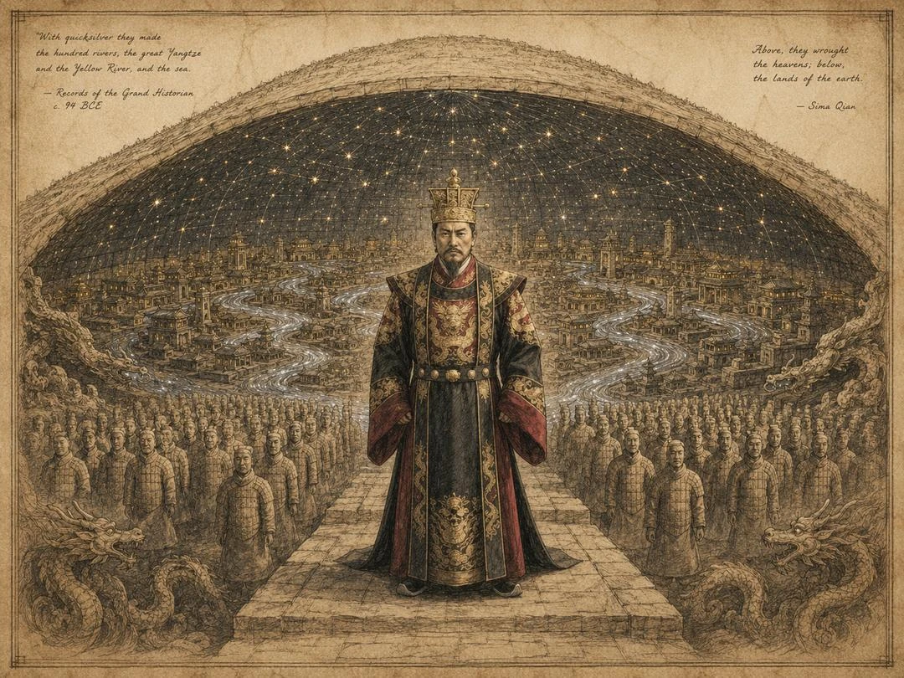
Most ancient dungeons are ruins. Hawara is almost gone. The Labyrinth of the Minotaur may never have existed in the form we imagine. The underground cities of Cappadocia can still be entered, but they are no longer inhabited as refuges. Mesoamerican temple pyramids survive in fragments, reconstructions, tunnels, and broken ritual landscapes.
The mausoleum of Qin Shi Huang is different.
The tomb of China’s First Emperor still lies beneath its mound, largely unopened. Around it, archaeologists have uncovered one of the most astonishing funerary landscapes in the world: the Terracotta Army, bronze chariots, pits of officials, entertainers, animals, weapons, and traces of an imperial afterlife built on a scale that is almost difficult to accept.
And somewhere at the center, still sealed, lies the emperor himself.
For RPG players and dungeon designers, that is a rare thing. This is not a dungeon we imagine from scattered texts alone. It is not only a myth, and it is not merely a ruin already emptied by time. It is a real ancient tomb complex whose final chamber remains closed.
That changes everything.
The Emperor Who Wanted Everything
Qin Shi Huang was the first emperor of a unified China. In 221 BCE, after the long violence of the Warring States period, he brought the rival kingdoms under Qin rule and created an imperial system that would shape Chinese history for centuries.
His achievements were enormous. So was the cost. He standardized weights, measures, currency, writing systems, roads, and administrative structures. He also ruled with extreme central control, harsh law, forced labor, and brutal political violence. His empire was not built gently. It was engineered.
That word matters.
Qin Shi Huang’s world was one of systems: roads, walls, laws, armies, bureaucracy, measurement, command. The mausoleum reflects the same mindset. It is not simply a grave. It is an empire remade beneath the earth.
The famous Terracotta Army was discovered in 1974 by farmers digging a well. What they found was not a small burial deposit but a buried military force: thousands of life-sized soldiers arranged in formation, with officers, archers, chariots, horses, armor, and weaponry. Each figure differs in face, posture, hairstyle, equipment, and rank. They are not random statues. They are an army in clay.
That alone would be enough for a legend, but the Terracotta Army is not the tomb itself. It is part of the outer world of the tomb. The emperor waits deeper in.
History And Legend
Much of what people think they know about Qin Shi Huang’s tomb comes from Sima Qian, the great Han dynasty historian who wrote about the mausoleum roughly a century after the emperor’s death.
His account is famous for good reason. According to Sima Qian, the tomb contained palaces, towers, officials, rare objects, and a miniature version of the empire. Rivers and seas were supposedly made from mercury. The ceiling displayed heavenly bodies. The floor represented the lands of China. Mechanical crossbows were installed to shoot intruders. After the burial, some workers may have been sealed inside so that the tomb’s secrets would remain hidden.
It is one of the most dungeon-like descriptions in ancient literature: a sealed imperial palace underground, artificial rivers of poison metal, automated weapons, treasure, dead builders, and a ruler preserved at the center of his own artificial cosmos.
For a fantasy writer, it almost feels too convenient. For a historian, it is more complicated.
Sima Qian wrote later, under the Han, after the Qin dynasty had already collapsed and become a lesson in tyranny. His account may contain exaggeration, moral framing, political memory, and real information blended together. We should not treat every detail as literal engineering fact, but we also should not dismiss it too quickly.
Modern surveys have detected unusually high mercury levels around the tomb mound. That does not prove that there are flowing mercury rivers exactly as described, but it does make the old account harder to ignore. The tomb has not been opened, so the central question remains unresolved. That uncertainty is the source of its power.
The best dungeons often live in the gap between record and rumor.
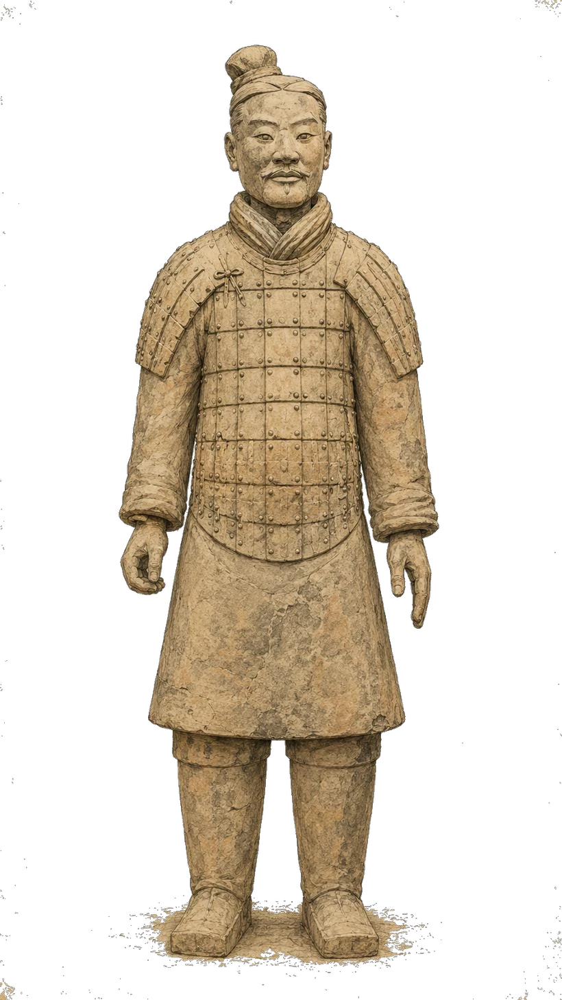
Why Has It Not Been Opened?
This is one of the most interesting parts of the story. Why has the tomb not simply been excavated?
The short answer is preservation. The longer answer is respect, danger, uncertainty, and technology.
The Terracotta Warriors themselves revealed the problem. When some figures were first exposed to air, pigments that had survived underground for over two thousand years deteriorated rapidly. Excavation is not neutral. Opening an ancient sealed environment can destroy the very thing one hopes to study.
The inner tomb may contain fragile organic materials, lacquer, textiles, painted surfaces, wooden structures, metals, and unknown architectural systems. If opened too early, it could be damaged beyond repair.
Then there is mercury. If the ancient reports are even partly true, the tomb may contain dangerous amounts of it. Mercury vapor would be a health risk, and disturbing the sealed environment could create both conservation and safety problems.
There is also the simple fact that nobody knows exactly what waits inside. Many ancient royal tombs were looted centuries ago. Egyptian pyramids and tombs were often entered, robbed, reused, explored, or damaged in antiquity. Qin Shi Huang’s central burial chamber, by contrast, appears to have remained largely intact.
In RPG terms, this is almost unheard of. The final room is still sealed, and the dungeon master has not shown anyone the map.
Was It Never Robbed?
Ancient China certainly had tomb robbery. Many tombs were looted, damaged, burned, or reused over time. The First Emperor’s mausoleum complex also suffered destruction in some outer areas, and historical traditions speak of attacks and fires after the fall of the Qin.
Yet the main burial chamber seems to have survived.
The answer is probably not one single thing. The tomb mound is massive. The complex was enormous. The central chamber may have been deep, well protected, and difficult to locate precisely. If Sima Qian’s account of traps and mercury had any basis, it would also have discouraged intrusion. Even the rumor of deadly defenses can be a defense.
There is another possibility that matters for worldbuilding: scale itself protects secrets. A small tomb can be searched. A vast funerary landscape can swallow the truth. If the entrance is hidden, if the chamber lies deep, if the surrounding complex is full of pits, walls, passages, and decoys, then even determined looters may not know where to strike.
A dungeon does not need an infinite number of rooms to be secure. It needs uncertainty.
Did He Want To Rise Again?
Qin Shi Huang is often connected with the search for immortality. Ancient accounts describe his desire to extend life, his interest in elixirs, and expeditions in search of substances or beings that could grant eternal life. Later tradition even associates his death with mercury-based immortality treatments, although the exact medical facts remain uncertain.
So did he build the tomb in order to rise again?
That is probably the wrong question.
The mausoleum does not look like a simple resurrection chamber. It looks like an afterlife state: a continuation of imperial order beneath the earth. The emperor is not buried alone with a few symbolic objects. He is surrounded by soldiers, officials, animals, vehicles, weapons, and a constructed version of the world he ruled.
This is not merely fear of death. It is refusal to stop ruling.
That makes the tomb conceptually different from many fantasy crypts. The dead king is not waiting in a coffin. He is installed at the center of a system designed to preserve hierarchy forever. Even in death, the empire remains arranged around him.
For RPG design, that is far more interesting than a simple lich. A lich wants to escape death. Qin’s tomb suggests something stranger: a ruler who builds a world where death itself becomes administration.
Mercury Rivers And Mechanical Crossbows
This is the part everyone remembers: the mercury rivers, the traps, and the deadly machinery.
Historically, we have to separate the layers. Sima Qian reports mercury rivers and automatic crossbows. Modern scientific work has found elevated mercury readings associated with the mound. Archaeologists have not opened the central tomb, so nobody can verify the internal layout. There is no public excavation confirming functioning crossbow traps inside the chamber.
For fiction, however, the image is almost perfect.
Mercury is visually and symbolically powerful. It shines like liquid silver. It moves like water but poisons like a curse. It can become river, mirror, boundary, forbidden sea, or magical medium. A tomb with mercury rivers is not just wealthy. It is unnatural.
The crossbow traps add a different idea: the dungeon as machine. Many fantasy traps feel artificial because they exist only to inconvenience the party. Qin’s tomb legend gives them a stronger logic.
The traps are not random puzzles. They are part of an imperial security system. The emperor feared intrusion, and the state that built walls, roads, armies, and laws also built death into architecture.
That is the lesson. A trap is stronger when it expresses the culture that made it. A Qin-inspired trap should feel precise, bureaucratic, engineered, and final. Not chaotic. Not playful. Imperial.
The Builders Beneath The Mountain
The human cost of the mausoleum is another part of the story that should not be ignored.
Ancient accounts speak of vast numbers of workers. Sima Qian gives the famous number of 700,000 laborers. Whether exact or exaggerated, the project was clearly enormous. It required administrators, craftsmen, potters, metalworkers, engineers, transport laborers, soldiers, overseers, and prisoners.
The Terracotta Army alone shows a production system of astonishing sophistication. Thousands of figures, weapons, bodies, heads, hands, armor patterns, and ranks had to be produced, transported, assembled, painted, and arranged underground.
For RPG design, this points to a darker question: who builds the dungeon?
Fantasy settings often treat ancient ruins as if they simply appeared. But every corridor was cut by someone. Every statue was carried. Every door was sealed by hands that may not have chosen the work.
The legend that some builders were sealed inside the tomb is powerful because it gives the dungeon a second layer of horror. The emperor is not the only dead presence beneath the mound. The workers, craftsmen, servants, concubines, prisoners, and guards become part of the monument too.
A dungeon built by forced labor should feel different from one built by priests, refugees, or dwarven engineers. Its stones remember command.
What Might Still Be Down There?
The honest answer is: no one knows.
There may be gold. There may be bronze, jade, lacquer, textiles, weapons, models, writings, vessels, and objects that would change what we understand about the Qin world. There may also be things that would not survive exposure unless conservation methods are ready.
The outer complex has already produced extraordinary material culture. Bronze chariots, terracotta soldiers, horses, armor, acrobats, officials, musicians, and other buried figures point toward a much larger vision than a simple military guard. The central chamber could be even more important, or it could surprise everyone by being more symbolic than spectacular.
That is the important part for game design. The unopened tomb is powerful not because we know exactly what is inside, but because we do not. A sealed door can be more exciting than an opened treasure room. Once the door opens, mystery becomes inventory. Until then, it remains possibility.
The Imperial Dungeon
If we reduce the Qin mausoleum to “a tomb with traps,” we miss the best part.
This is not merely a burial chamber. It is a model empire, a political statement, a machine of memory, and a monument to control. The emperor who unified the living world tried to carry order into the dead one.
That is a strong dungeon concept because it begins from the opposite premise of many fantasy ruins. Most dungeons are built around chaos. Monsters move in. Rooms decay. Factions fight. Old systems fail. A Qin-inspired dungeon begins with order.
Everything has a place.
The army stands where it was placed. The officials wait in their assigned pits. The roads, rivers, stars, and walls exist in miniature. The dead emperor does not haunt the tomb as a wandering ghost. He rules it from the center.
The horror comes when the system still works.
Imagine a party entering such a place. They are not exploring ruins. They are violating an order that has lasted for more than two thousand years. Every step inward is trespass. Every opened door is rebellion. Every treasure taken is theft from an empire that refuses to admit it ended.
That is not a dungeon crawl. It is an invasion of the afterlife.
Lathmar: The Dwarven Depths
This connects naturally to Lathmar: The Fallen Depths, but in a different way than the Ithrax temples or the underground cities of Cappadocia.
For Lathmar, the Qin mausoleum is useful because it asks what happens when a civilization builds downward not out of fear, but out of ambition.
The dwarven cities of Lathmar already reach into unknown depths. Their mines follow veins of adamantan and mithril into places where the stone becomes older, richer, and less willing to be disturbed. Like Qin’s builders, the dwarves are engineers of permanence. They do not merely occupy the mountain. They organize it.
And yet, little is known about the death rites of the dwarven rulers. That absence is useful.
What if the deepest halls were not only mines? What if some shafts were also processional routes? What if the oldest kings were not buried in small chambers, but installed in vast sealed courts beneath the city, surrounded by armor, tools, war machines, oath-stones, and the treasures of the clans?
A dwarven royal tomb should not feel like a human crypt. It should feel like a sealed kingdom of labor, law, craft, and debt.
The Qin mausoleum offers a powerful structural model for that. Not a grave as a room, but a grave as an entire political world. Not treasure scattered in chests, but wealth placed according to ritual and authority. Not traps as tricks, but defenses as expressions of a society that expected its dead rulers to remain important.
Then comes the Lathmar twist.
The dwarves dug for adamantan and mithril. They found wealth, power, and the promise of deeper mastery. But in the deepest zones, they also found corruption. Not merely symbolic greed. Not just a moral lesson about digging too far, but something real. Something that was already below them.
That is where the Qin parallel becomes useful but not identical. Qin’s tomb is a sealed world built to preserve imperial control. The dwarven depths of Lathmar may have begun as sealed worlds too: tombs, vaults, mines, royal chambers, and sacred engineering works meant to last forever.
But corruption does not respect permanence. It seeps into the system. It turns greed into a door. It turns burial into occupation. It turns the deepest royal chambers into places where the old laws still speak, but no longer with the voices of the dead.
That is the kind of dungeon I find most interesting: not an abandoned mine, not a random cave, but a civilization’s deepest expression of order touched by something that should never have been found.
The Tomb That Waits
The mausoleum of Qin Shi Huang remains powerful because it has not given up its final secret.
We can walk among the Terracotta Warriors. We can study the pits. We can measure mercury anomalies. We can read Sima Qian and argue about what he knew, what he exaggerated, and what he turned into moral history.
But the emperor’s chamber is still closed.
That is almost impossible to resist as a storyteller. Most dungeons end when the final door opens. Qin’s mausoleum reminds us that sometimes the most powerful dungeon is the one that remains sealed. It teaches restraint. It teaches scale. It teaches that traps are better when they express a culture, that treasure is more interesting when it belongs to a worldview, and that a tomb can be more than a place for the dead.
It can be a second empire, a world beneath the world, a sealed machine of power waiting for the wrong hand to open it.
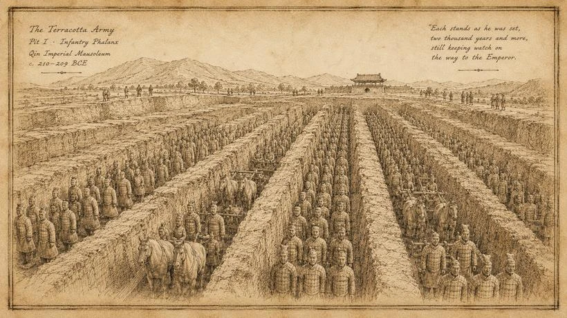
Sources and Further Reading
The historical discussion above is grounded in the sources below. The comparisons to game design and the fictional world of Lathmar are interpretive.
Sima Qian. Records of the Grand Historian: Qin Dynasty. Translated by Burton Watson. Columbia University Press, 1993. See also Shiji 6, The Basic Annals of the First Emperor of Qin. Digital text
UNESCO World Heritage Centre. Mausoleum of the First Qin Emperor. World Heritage record
Portal, Jane, and Hiromi Kinoshita, eds. The First Emperor: China's Terracotta Army. British Museum Press, 2007. Library record
Chang Yong and Li Tong. Application of mercury survey technique over the mausoleum of emperor Qin Shi Huang. Journal of Geochemical Exploration 23, no. 1 (1985): 61-69. DOI
Zhao, Guangyu, Weixing Zhang, Zheng Duan, et al. Mercury as a Geophysical Tracer Gas - Emissions from the Emperor Qin Tomb in Xi'an Studied by Laser Radar. Scientific Reports 10 (2020): 10414. DOI
About this edition
Copyright © 2026 Sabnock Works. All rights reserved. This web edition reproduces the text of the September 2026 PDF edition, with its illustrations and source notes where present. Historical material is presented for educational and creative discussion; comparisons with game design and the world of Lathmar are interpretive.
Cover illustration created for the PDF edition with OpenAI image generation under the direction of Sabnock Works.
Download the original PDF edition · Return to the essay archive